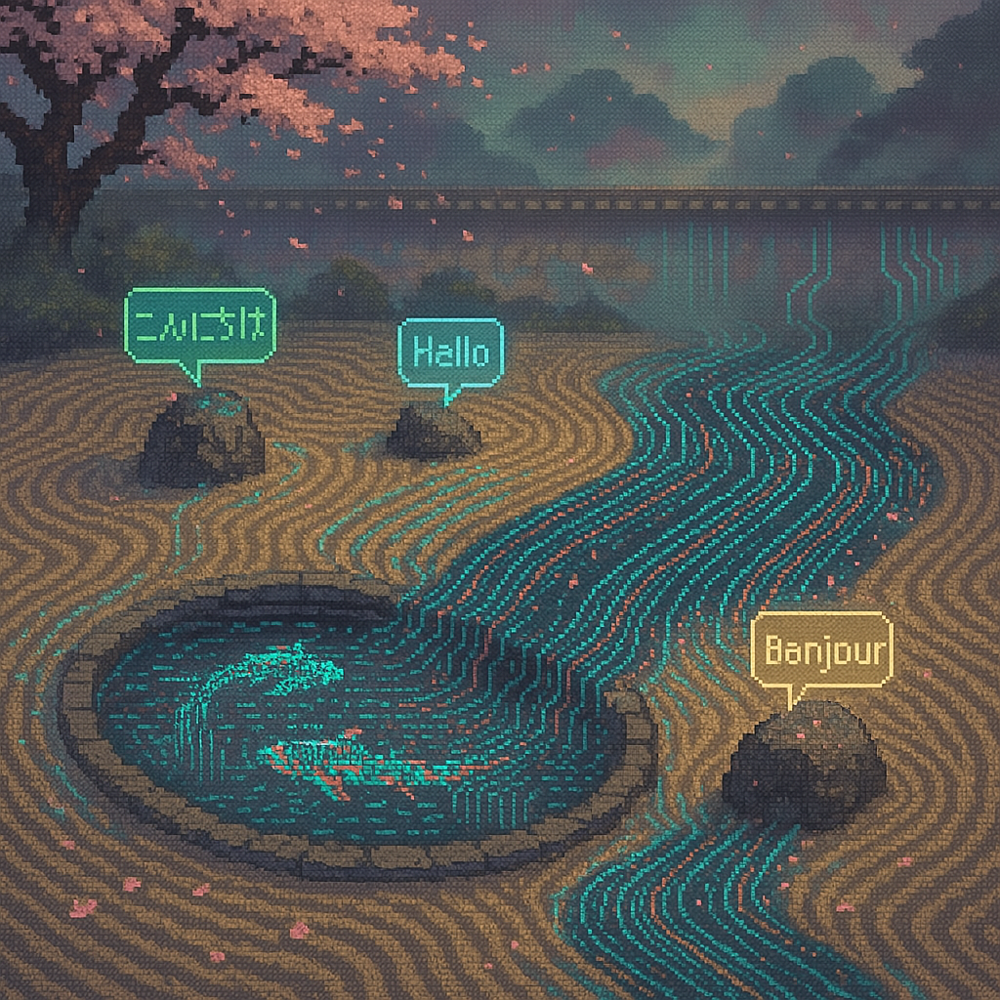
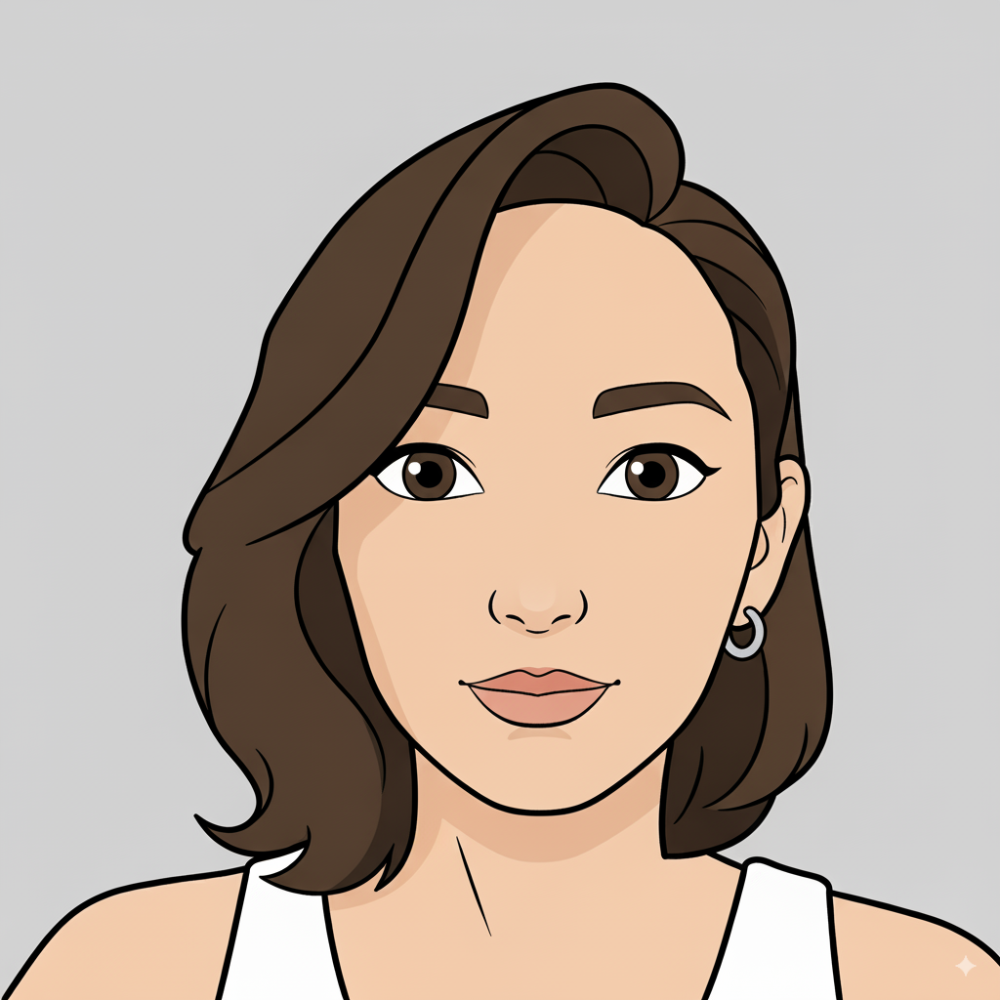
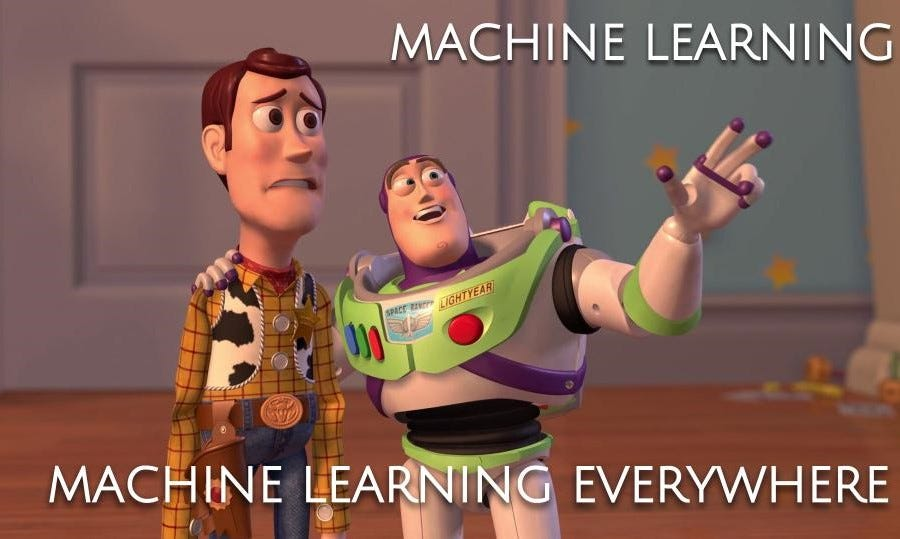
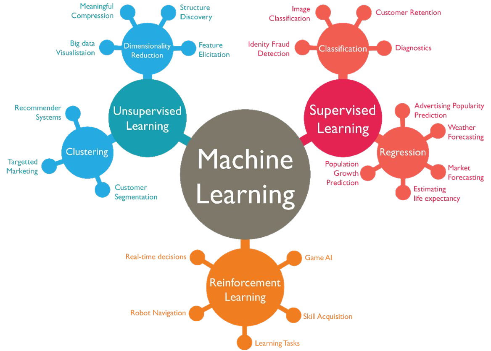
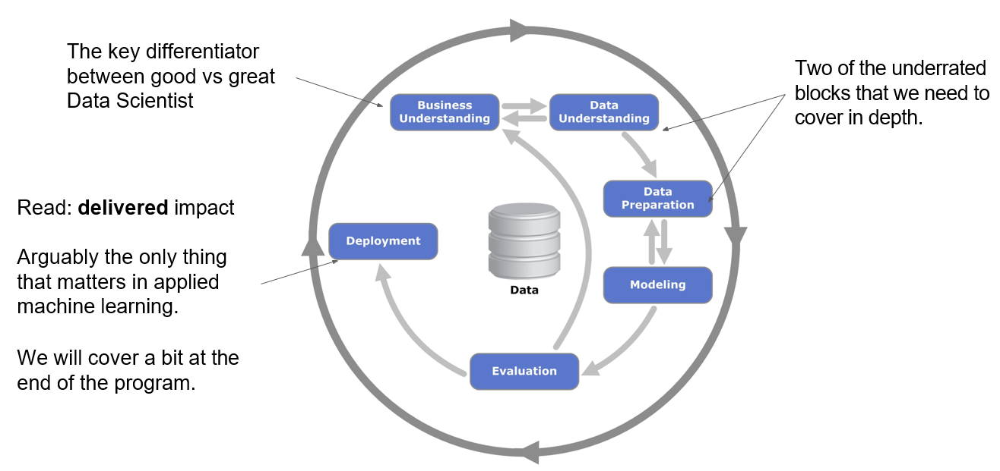
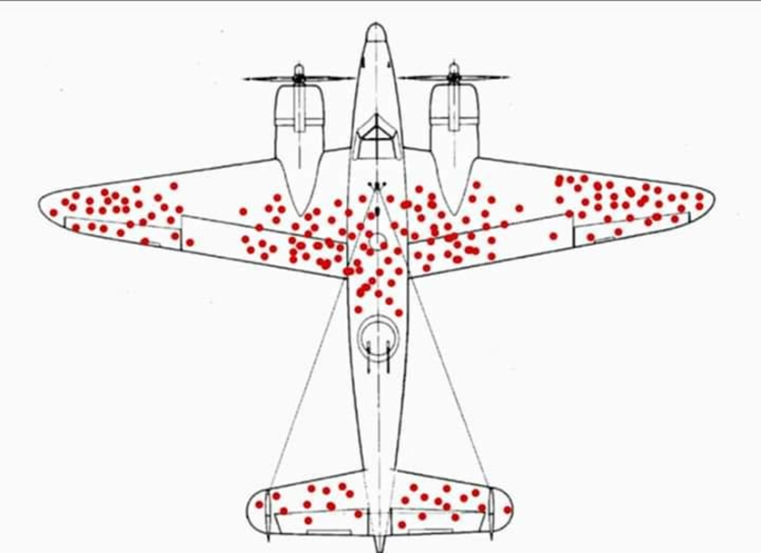
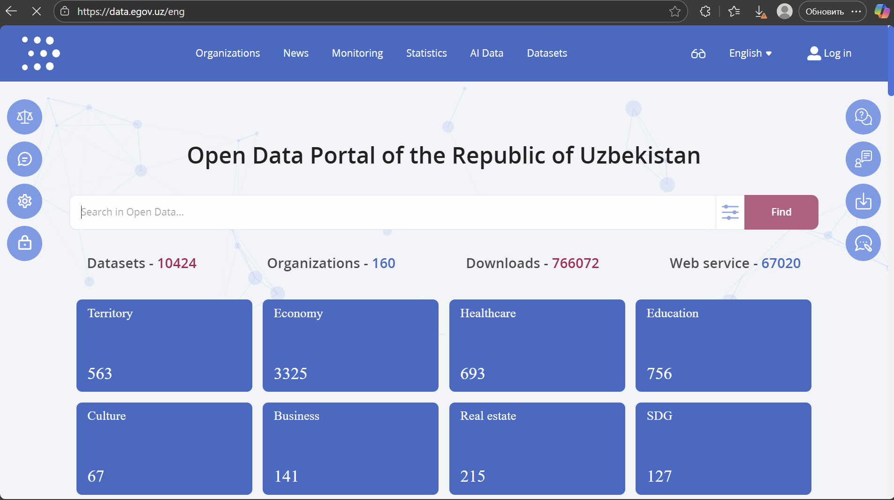
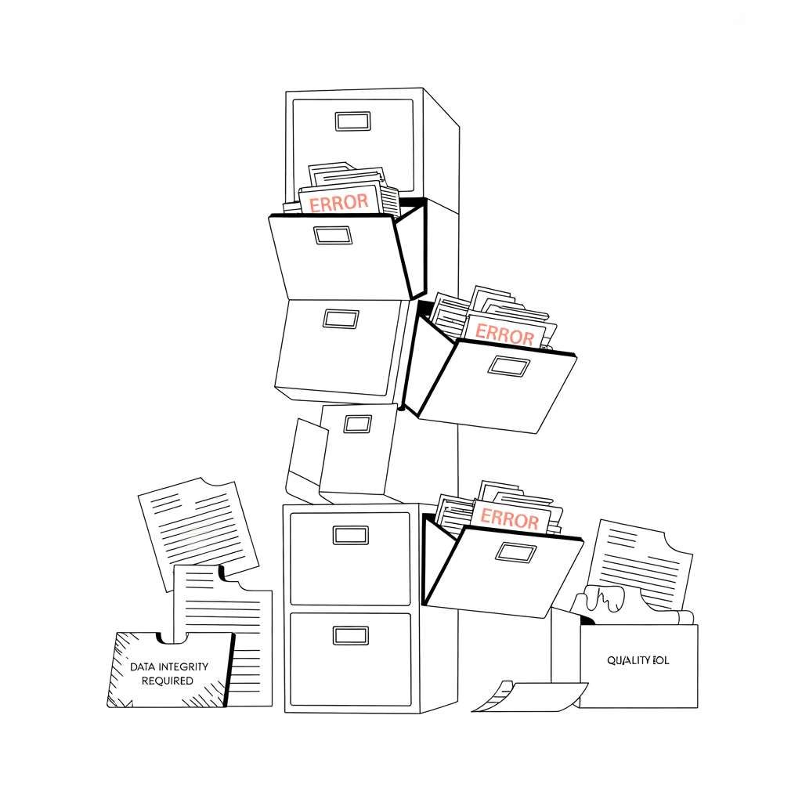

Урок 1
Фундамент. Контекст. Импакт.
Урок 01
Прежде чем переходить к алгоритмам и моделям -
понять, какие проблемы мы решаем и почему они важны.

О себе
Родилась в Алматы, Казахстан. Чтобы работать в IT, не обязательно уметь программировать - 80–90% должностей в Microsoft, Google и Facebook не требуют кода.

За цифрами
Источники: U.S. Bureau of Labor Statistics (Occupational Outlook Handbook, 2024-2034) · BLS May 2023 · Market.us / LinkedIn Jobs Report
Цифры по США. По СНГ публичной статистики меньше, но тренд тот же.
Три способа, которыми машины учатся

Два подхода к обучению
Не стремитесь быть дата-сайентистом или инженером - станьте мостом между бизнесом и технической командой.
Дисклеймер
Не победы на Kaggle. Не создание передовых AI-систем с нуля. Реальные задачи бизнеса.
Мир ML огромен. Мы концентрируемся на практическом применении в реальных бизнес-задачах.
Дополнительные ресурсы
Ситуация
Вы нанимаете удалённо со всего мира.
Не показывайте, что вы делали в прошлом. Покажите, что вы можете сделать для них. Желательно - через рекомендацию напрямую к нанимающему менеджеру.
Вопрос аудитории
Подумайте минуту →
Ответ
Не код. Не алгоритмы. Не серверы.
Любая зафиксированная информация: транзакции, клики, сенсоры, тексты, изображения, голос.
Данные - топливо для ML. Без них модель не обучится, продукт не поймёт пользователя.
Garbage in - garbage out. Качество данных определяет качество всего, что построено сверху.
На практике
Чаще всего это тихие системы внутри компаний, а не лаборатории с роботами.
Фреймворк
CRoss-Industry Standard Process for Data Mining

То, что отличает хорошего дата-сайентиста от великого.
Единственное, что реально важно в прикладном ML - доставленный результат.
Шаг 1
Три последовательных шага
Собрать данные - или понять, как они были собраны
Выявить проблемы с качеством до анализа
Найти подгруппы и сформировать гипотезы

Эффект выжившего · WWII
Самолёты, вернувшиеся домой, имели пулевые пробоины на крыльях и фюзеляже.
Подумайте минуту, прежде чем смотреть ответ →
Эффект выжившего · WWII
Первоочевидный ответ
Усилить области с пробоинами - там, где попадания.
Эффект выжившего · WWII
Первоочевидный ответ
Усилить области с пробоинами.
Правильный ответ
Усилить там, где пробоин нет - двигатели и кабину. Самолёты с попаданиями туда просто не вернулись.
Эффект выжившего · WWI
Британские солдаты носили мягкие фуражки. Зафиксированных травм головы - мало.
Перешли на стальные каски - число зарегистрированных травм головы возросло.
Каски работают. Солдаты стали выживать после ранений, которые раньше были смертельными - поэтому их стали регистрировать. Данные без контекста вводят в заблуждение.
Что отличает
Откуда взялись данные, кто и как их собирал, что в них могло быть упущено.
Кто попал в выборку, а кто нет. Что мы видим - и чего не видим.
Объяснить результат тому, кто не работает с моделями, без потери смысла.
Повторение статистики
Наш датасет. На нём мы обучаем модель.
Population · СовокупностьРеальный мир, на котором модель должна работать.
Действительно ли наша выборка репрезентативна?
Сбор данных
Публичные порталы открытых данных - полноценный источник для ML

data.egov.uz - 10 424 датасета: Территория, Экономика, Здравоохранение, Образование, Культура, Бизнес, Недвижимость, ЦУР.
Сбор данных
Application Programming Interface
Помимо CSV и SQL - научитесь работать с API напрямую
Поймите формат, в котором приходят данные
Структура данных, на которой строится работа с JSON

Качество данных · Часть 1
Необязательные поля, изменение схемы, сломанный датчик. Иногда null несёт смысл - «бесконечность», «не знаю».
Строковые «unknown», «None», «null», нули и предопределённые константы без контекста.
Качество данных · Часть 2
Значения вне допустимого диапазона - например, возраст < 18 в банковских данных.
Даты в разном написании, валюты, температура в C / F / K.
Это баг данных - или особенность? Один из главных вопросов EDA.
Какая комбинация столбцов должна быть уникальной для строки?
В BI всегда добавляйте проверки на допустимые значения, not-null и уникальность.
Реальная работа
Большая часть - это не моделирование. Это то, что в курсах часто пропускают.
Модель - лёгкая часть. Понять вопрос - вот это работа.
Анализ данных
Асимметрия · описательная статистика · распределения
Цель ML - не строить модели.
А помогать принимать решения лучше - быстрее и с меньшим числом догадок.